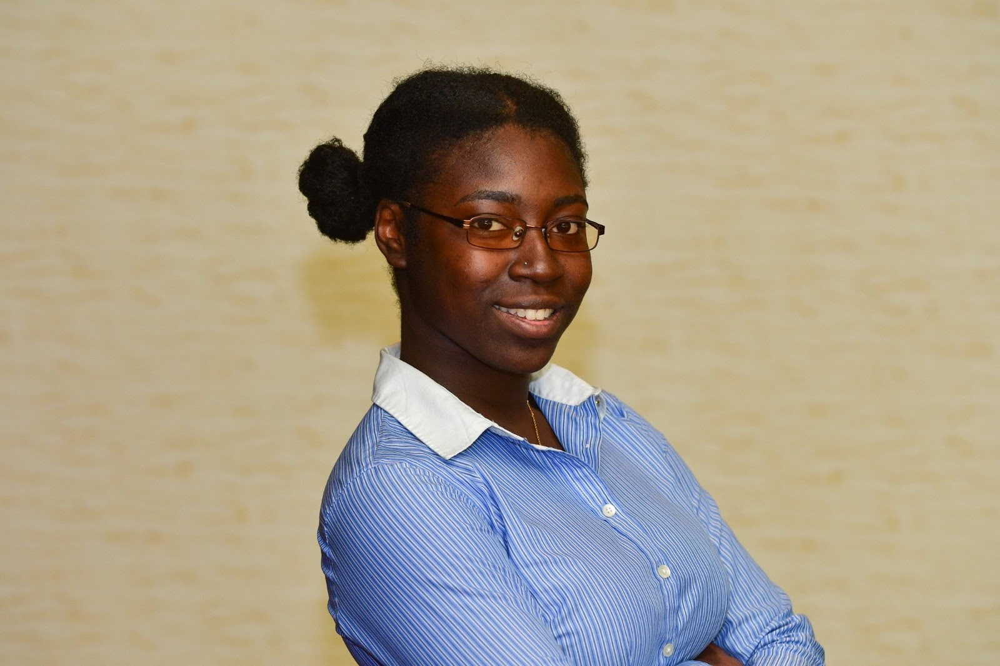
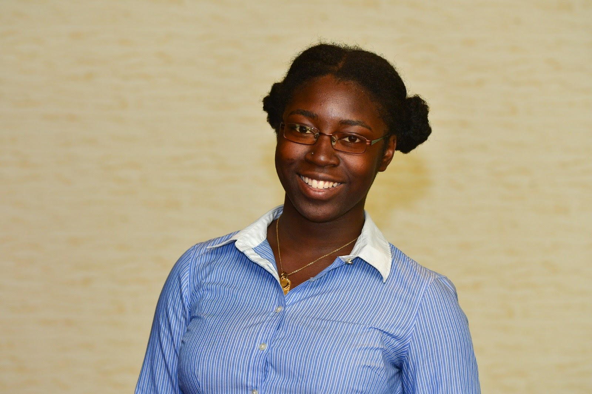
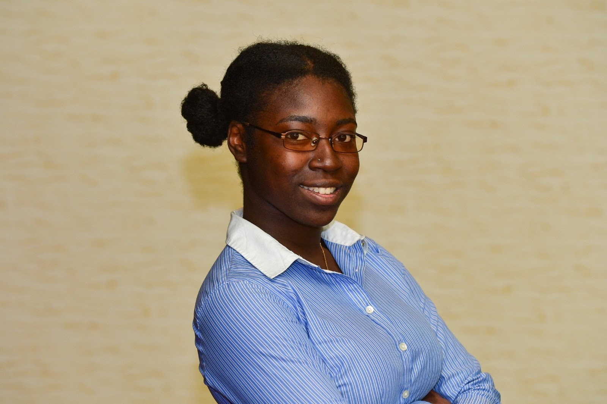
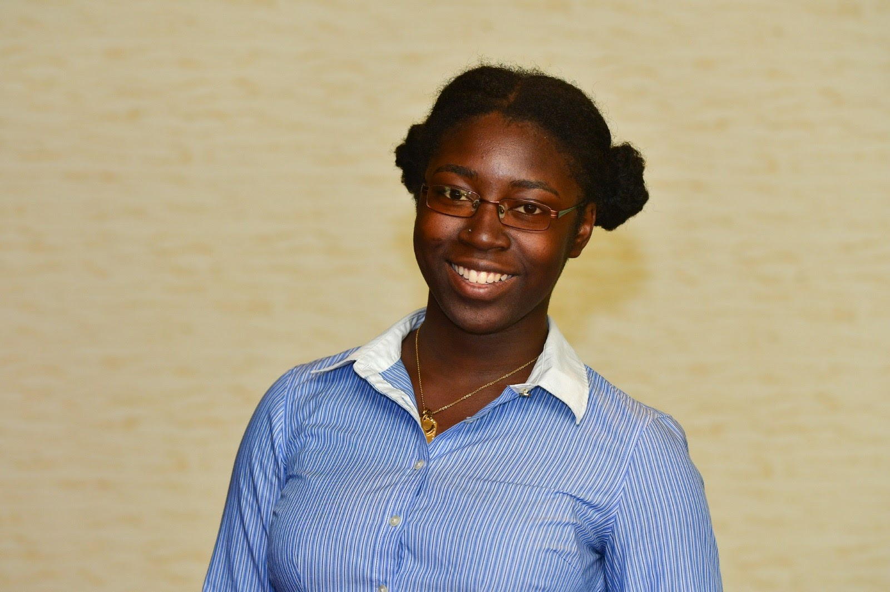
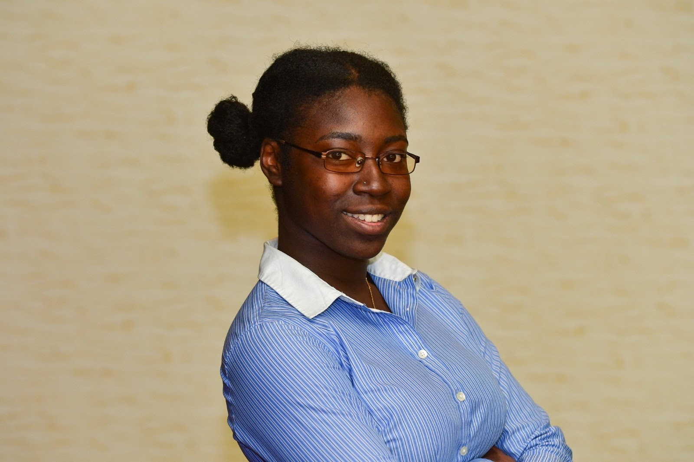
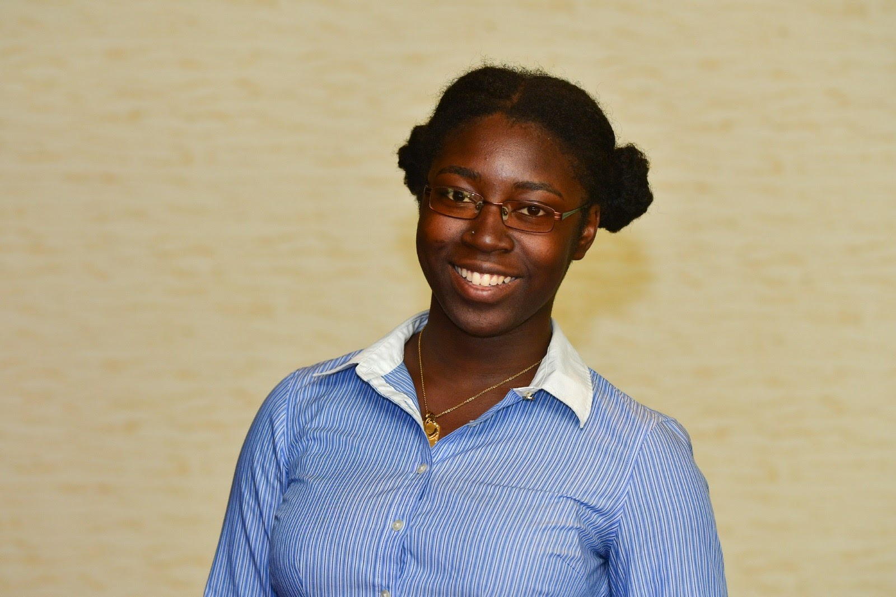

Meet Zoë!
 



A dedicated, strong-willed and organized leader with excellent communication skills and a vibrant personality who uses adaptability, creativity, and her love for technology to get the job done. Born and raised in the Caribbean, she has a worldly view and an open mindset that continue to encourage growth and success.


Bachelor of Science in Information Technology - Software
Minor in Project Management
Expected Graduation:
Spring 2019
Associate of Arts in Information & Communication Technology
Graduated:
November 2015
Student Affairs Technology Centre, FIU
January 2018 - present
College of Engineering & Computer Science, FIU
January 2017 - April 2017 | August 2017 - December 2017
Deloitte, Miami, FL
June 2017 - August 2017
Charles E. Mills Secondary School, Sandy Point, St. Kitts
September 2015 - July 2016
After graduating FIU with a BS in Information Technology, my aim is to attend Graduate school to earn a Masters Degree within the area of Information Technology. My study interests are in software development and management.
After my graduate degree is completed, I hope to work within the area of IT and development. An organization that offers upwards mobility and the chance to attain mangerial positions is ideal.
Throughout my life, I aim to give back. I grew up in a society that could not see the necessity of technology and as such, many brilliant students like myself who aspired to work within the field of technology could not easily persue their goals.
It is my life's goal to create a tech incubator within the Caribbean to not only encourage the use of technology in the region, but also to foster regional development and allow thousands of students to achieve their goals.
Available throughout the week via email or phone call between the hours of 8 AM and 6 PM.
928 NW 206 St, Miami, FL 33169 USA